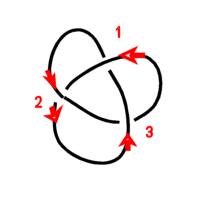
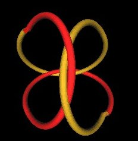

I recently learned from Lynnclaire that there are (at least) 3 different Knots which look like her "Pattern Knot" (a.k.a. the "Mereon Knot"). Here, I try to explain the differences between these various versions of "the" knot.
While working with Lynnclaire on the knot variations, we (Lynnclaire Dennis, Lou Kauffman and I (and possibly others)) fell into a naming of the knots based on the way each person made the knot. There is the "Lynnclaire" version, the "Lou" version and the "Bob" version. I will use this informal naming here just so I can identify which version of the knot I am talking about. This is not to document nor imply any discovery propriety. I am not recording who discovered what and when. It is simply a naming convention to make it easier to write about the variations of "the" knot. (I do not know for sure but I think that Lynnclaire originated all these variations during her exploration of the construction of the knot.
The "Lynnclaire" and the "Lou" versions are all Trefoil knots. The "Bob" version is not a Trefoil knot.
So let's quickly look at the Trefoil knot. Here is a line drawing of it.
| Figure 1 |
In this drawing there are what looks like 3 lobes (black numbers) and 3 crossings (red numbers).
Note that you can't tell at the crossings points if the wire goes under or over one another at the 3 crossings.
So we modify the drawing to indicate if the string goes under of over itself at the crossings.
It turns out that there are 2 different ways to do this.
|  |
|
| Figure 2 | Figure 3 |
In Figure 2, starting at crossing 1, and in the direction of the red arrows, we find that the over/under (O/U) sequence is
In Figure 3, starting at crossing 1, and in the direction of the red arrows, we find that the over/under (O/U) sequence is
You might think that you can somehow convert Figure 3 (and the Over/Under sequence) into that of Figure 2. Maybe if you turn one up-side down.... But you can't!
You can see this if you make a wire model of each of these Trefoil knots. Lynnclaire uses 14 Gauge single strand insulated copper wire. I also find this works very well. You can bend and twist these wire knots all you want but you can not transform one into the other.
So, there are 2 different Trefoil knots.
One knot is termed a "left handed" Trefoil knot and the other is the "right handed" Trefoil knot.
The "Lynnclaire" knot is that of Figure 2. The "Lou" knot is that of Figure 3.
For the wire models that Lynnclaire shows, there is added an additional "twist". This does not change the knot. It is still a Trefoil knot, only bent into a configuration which looks different. But again, it is not different. It is the same Trefoil knot shown above.
With this added twist, the knot can wrap around a Tetrahedron.
Here are some Figures showing this twisting.
Taking Figure 1, we stretch lobe 3 and twist....
| Figure 4 | Figure 5 |
Then we bend this twisted lobe up and fold over the other lobes.
| Figure 6 |
| Figure 7 |
The brown colored part is the folded over twist lobe.
This "extra" twisted lobe part has everything to do with the special properties of Lynnclaire's knots. It is what allows the knot to be mapped onto the face of a Tetrahedron.
But what are we to make of this twist? Where does it come from? What other consequences does it have?
The first comment I have to make is that this twist is a natural occurrence in physical looping of real material. It does not show up when considering only the topological crossing of the Knot.
In particular, when calculations are made for the minimum energy configuration of the knot, it is often done without consideration of the amount of twist energy stored in the material. In such cases, the energy minimization of Lynnclaire's knots will always result in the knot configuration ending up with 3 lobes as in Figure 1 (but in 3 dimensions, i.e. not flat).
However, if the knot's material properties are taken into consideration when doing the energy minimization calculations, in particular, the twist energy in the material, this extra twist-originating lobe may occur as an energy minimum configuration.
(I need to say "may occur" because I have not done such calculations.)
This is an area that needs further research.
As you may have experienced, if you take a piece of string and fix one end and begin twisting the other end, holding the string a little loosely, eventually the string will twist up and form a loop. This, I feel, is the origin of the "extra" lobe in Lynnclaire's configurations of the Trefoil knot.
Lynnclaire has often said that there is an extra rotation/twist to the thread of the knot as you follow the thread around the knot.
The ability of Lynncalaire's knot to transform into a Tetrahedron configuration is one of the principle properties of her knot.
As an orientation reference device for enumerating the knots and crossing sequences, I will use the knot wrapped onto the Tetrahedron.
| Figure 8 |
This image is not correct in that it does not show the actual weave in the knot.
The weaves in a real, e.g., wire model of the knot will occur in the region of 2 of the tetrahedron's edges.
| Figure 9: Fore edge | Figure 10: Back edge |
Each of the 2 weaves (Fore and Back) can be one of following.
| Figure 11 | Figure 12 |
| Figure 13 | Figure 14 |
There are 2 possible weaves for the Fore crossing and 2 possible weaves for the Back crossing.
So, taking these in combinations, there is a possible 2x2=4 different knots that can form onto the Tetrahedron, in the general configuration shown in Figure 8.
We label the weaves (Fore and Back) and crossings as follows. (There are 2 crossings at each weave.)
| Figure 15 |
For example, consider the following knot.
| Figure 16 | Figure 17 |
It is made by combining Figures 11 and 12.
The sequence of crossings, starting at the white arrow on the red wire of Figure 17, can be written as
You might think that crossing points 3 and 4 are wrong, that they should be listed as 3-U and 4-O. But you must remember that you are looking at the back side of the weave (3, 4). If we rotate the knot so that crossing points (3, 4) are in the foreground of the knot, then you will see that the sequence is 3-O, 4-U, as I list. (This is just a "convention" that I choose to follow.)
I now list all possible crossing sequences for a knot on the Tetrahedron. These are:
| Case | Crossing | Knot Name | |||
| . | 1 | 2 | 3 | 4 | . | 1 | U | O | U | O | Bob |
| 2 | U | O | O | U | Lynnclaire |
| 3 | O | U | U | O | Lou |
| 4 | O | U | O | U | Bob |
It turns out that cases 1 and 4 (the "Bob" knots) are the same knot. You can rotate the Tetrahedron/Knot of case 1 (so that the Fore weave is now in the position of the Back weave) and get the same knot crossing sequence as in case 4.
This is not possible with either the "Lynnclaire" nor the "Lou" knots. There is no rotation which will turn one knot crossing sequence into the other.
I found a flat projection of the "Bob" knot in Colin C. Adams' book "The Knot Book" on page 3, Figure 1.5. It turns out that the "Bob" knot is known as the "figure-eight" knot.
Here is a projection drawing of the "Bob/figure-eight" knot.
| Figure 18 |
So, here are the 3 knots:
|  | ||
|
Figure 19 "Lynnclaire" Knot (Trefoil) |
Figure 20 "Lou" Knot (Trefoil) |
Figure 21 "Bob" Knot (Figure-Eight) |
It is the "Lynnclaire" knot shown in Figure 19 which Lynnclaire calls the "Mereon" a.k.a "Pattern" a.k.a. "the" knot.
We find that there are only 3 knots which can be formed onto a Tetrahedron and in the general configuration shown in Figure 8.
The "Lynnclaire" and the "Lou" knots are Trefoil knots. The "Bob" knot is not a Trefoil knot. It is a "figure-eight" knot.
Also, the twist energy in the knot needs to be considered when doing energy minimization configuration calculations/simulations.
Usage Note: My work is copyrighted. You may use my work but you may not include my work, or parts of it, in any for-profit project without my consent.